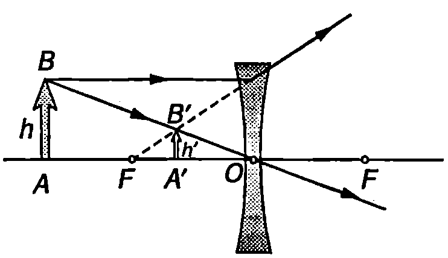
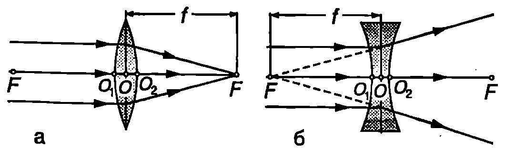
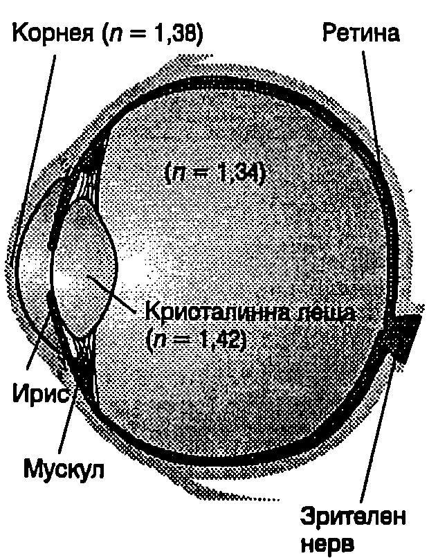
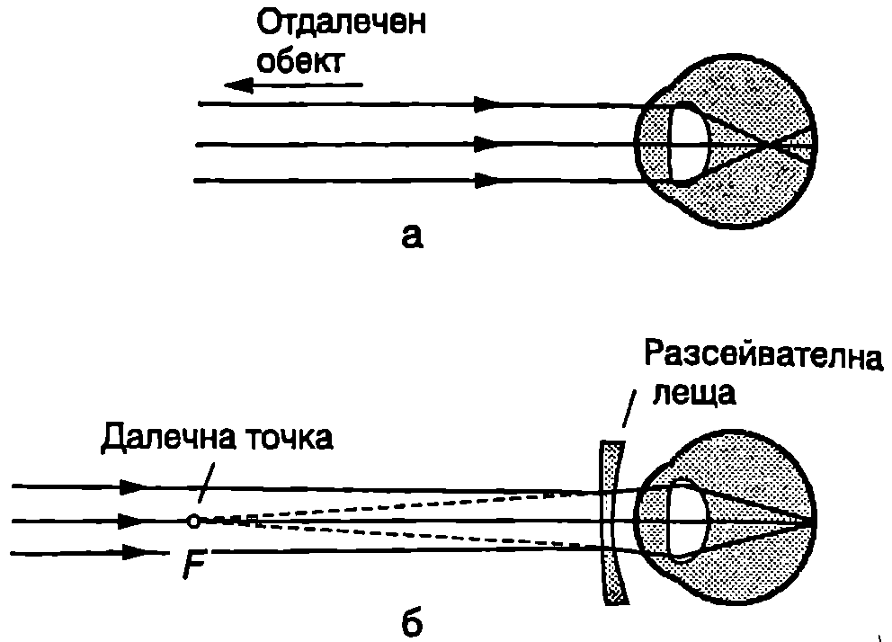
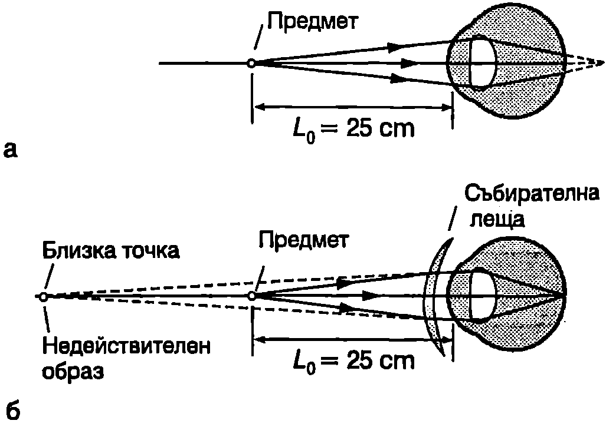
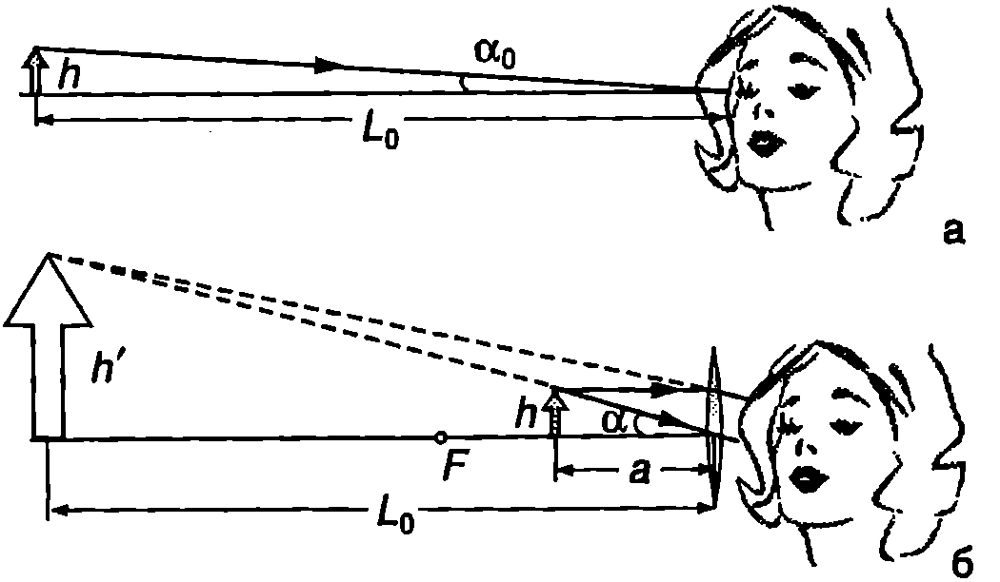

**Тънки лещи **
Лещи се изготвят предимно от стъкла или прозрачни пластмаси. За получаване на образи във фотоапарати, телескопи, микроскопи и други оптични уреди най-често се използват сферични лещи техните гранични повърхности са части от сфери. Лещите са два вида: събирателни и разсейвателни. Събирателната леща е по-дебела в средата и по-тънка в краищата. Обратно, средата на разсейвателната леща е по-тънка от краищата. Правата, съединяваща центровете на двете сферични повърхности на лещата, се нарича главна оптична ос. Сноп от светлинни лъчи, успоредни на главната оптична ос, след като се пречупи от събирателна леща, става сходящ: лъчите се пресичат от другата страна на лещата в една точка , наречена фокус на лещата (Фиг. \ref{fig:89.1}а). Разстоянието от фокуса до лещата се нарича фокусно разстояние 1. Равнината, преминанаваща през фокуса и перпендикулярна на главната оптична ос, се нарича фокална равнина. Ще разглеждаме лещи, за които разстоянието (Фиг. \ref{fig:89.1}а) между двете пречупващи повърхности (дебелина на лещата), е много по-малко от фокусното разстояние 1. Такива лещи се наричат тънки лещи. За тънка леща няма значение дали фокусното разстояние се измерва от оптичния център , от точка или от Сноп от лъчи, успореден на главната оптична ос, след като се пречупи от разсейвателна леща, става разходящ (Фиг. \ref{fig:89.1}б). Продълженията на пречупените лъчи се събират във фокуса на лещата.
Всяка леща има два фокуса, които лежат върху главната оптична ос и са разположени симетрично от двете страни на лещата (Фиг. \ref{fig:89.1}).

Построяване на образ от събирателна леща.
`Фиг. 89.2`
На Фиг. \ref{fig:89.2} е показано построяването на образ на предмет от събирателна леща. За да се получи образът на точка , се използват два лъча, чийто път е известен: лъчът 1 преминава през оптичния център на лещата и не се пречупва; лъчът 2, който е успореден на главната оптична ос, след като се пречупи от лещата преминава през фокуса . Образът е действителен, ако се получава при пресичането на пречупените от лещата лъчи (Фиг. \ref{fig:89.2}). Действителните образи могат да се наблюдават върху екран. Когато образът се получава при пресичане на продълженията на пречупените лъчи, той е недействителен (Фиг. \ref{fig:89.3}).

Построяване на образ от разсейвателна леща.
`Фиг. 89.3`
Формула за тънка леща
Ще използваме чертежа от Фиг. \ref{fig:89.2}, за да определим връзката между разстоянието от предмета до лещата и разстоянието от лещата до образа. От подобните триъгълници и следва, че

`Фиг. 89.1`
Това отношение се нарича линейно увеличение на лещата. То показва колко пъти височината на образа е по-голяма от височината ѝ на предмета. От подобните триъгълници и следва, че
Приравняваме десните страни на двете равенства: , откъдето се получава формулата за тънка леща:
Тази формула може да се прилага както за събирателни, така и за разсейвателни лещи, ако се спазва следното правило за знаците:
-
Събирателните лещи имат положително фокусно разстояние (f) , а фокусното разстояние на разсейвателните лещи е отрицателно ().
-
Разстоянието винаги е положително (). Предметът е пред лещата: от него излизат лъчите, които след това се пречупват от лещата и преминават в пространството зад нея.
-
Разстоянието е положително () , когато образът е зад лещата (действителен образ); е отрицателно () , ако образът е пред лещата (недействителен образ).
Като се отчита правилото на знаците, може да се даде по-общо определение за линейното увеличение на леща:
Линейното увеличение е положително (), когато образът е прав (Фиг. \ref{fig:89.3}). Когато образът е обърнат (Фиг. \ref{fig:89.2}), неговата височина се приема за отрицателна () и линейното увеличение също е отрицателно () При образът е увеличен (Фиг. \ref{fig:89.2}), а при образът е умален (Фиг. \ref{fig:89.3}).
Пример 89.1
Предмет се намира на разстояние 15 cm пред разсейвателна леща с фокусно разстояние 10 cm. Определете положението на образа и линейното увеличение на лещата. Характеризирайте образа и след това го постройте геометрично. \end{psexample}
Решение
Във формулата за тънка леща \eqref{eq:89.1} заместваме cm и cm (фокусното разстояние в отрицателно, защото лещата в разсейвателна) и определяме cm. Разстоянието в е отрицателно, което означава, че образът се намира пред лещата (недействителен образ). Линейното увеличение в което показва, че образът е прав; — следователно образът е умален. Построяването на образа е показано на Фиг. \ref{fig:89.3}.
Окото като оптичен уред
На Фиг. \ref{fig:89.4} е показано напречно сечение на човешко око. Светлината влиза в окото през корнея (роговица) — тънка прозрачна мембрана с приблизително сферична форма. Основното пречупване на светлината става на границата въздух - корнея, тъй като там най-силно се изменя показателят на пречупване: от за въздуха на за корнея. Пречупването от всички гранични повърхности вътре в окото е по-слабо, защото те разделят среди с близки по стойност показатели на пречупване. Важен оптичен елемент от окото е кристалина — прозрачно тяло с форма на събирателна леща, съставено от слоеве с различен показател на пречупване. Попадащата в окото светлина се фокусира от системата корнея - кристалинна леща върху задната повърхност на окото, наречена ретина. Ретината съдържа милиони фоточувствителни рецептори. При стимулиране на рецепторите със светлина се създават нервни импулси, които по оптичния нерв се изпращат до главния мозък и създават в него зрителни усещания.

`Фиг. 89.4`
За да виждаме ясно даден предмет, той трябва да се фокусира от окото, т.е. оптичният му образ трябва да попадне върху ретината. Ако кристалинната леща беше твърда, окото би фокусирало само предметите, разположени на някакво точно определено разстояние пред него. Формата и фокусното разстояние на кристалинната леща обаче могат да се изменят, което дава възможност окото да фокусира както близки, така и отдалечени предмети. Този процес се нарича акомодация и се осъществява от специален мускул, свързан към лещата. Когато очният мускул е отпуснат, предната повърхност на лещата е приблизително плоска и окото фокусира отдалечени предмети. Най-отдалеченият обект, който окото може да фокусира, се определя от т.н. далечна точка. Човек с нормално зрение може ясно да види много отдалечени предмети, например Луната: за нормалното око далечната точка е в безкрайност.
Когато очният мускул се свива, предната повърхност на лещата започва да се огъва. Тя става по-изпъкнала и фокусното разстояние на лещата намалява: окото фокусира предмети, които се намират по-близо до него. Разстоянието до най-близкия предмет, който окото фокусира без да се напряга, се нарича разстояние на най-ясно гледане или близка точка. Обикновено това разстояние нараства с възрастта: на 10 години то е около 18 cm, а на 60 годишна възраст може да достигне 500 cm. За стандартното око разстоянието на най-ясно гледане се приема за 25 cm.
Коригиране на зрението
Късогледството е дефект на окото, при който не се виждат ясно отдалечените предмети. Далечната точка за късогледото око обикновено се намира на по-малко от 1 m от окото (за нормалното око тя е в безкрайност). Когато предметът се намира зад далечната точка, дори при отпуснат очен мускул лъчите се пречупват от окото твърде силно и образът се получава пред ретината (Фиг. \ref{fig:89.5}а). Този недостатък на окото се коригира с разсейвателна леща (очила или контактни лещи). Подбира се разсейвателна леща, чийто фокус да съвпада с далечната точка (Фиг. \ref{fig:89.5}б). Тогава недействителният образ на безкрайно отдалечен предмет се получава в далечната точка (във фокалната равнина на лещата). По този начин разсейвателната леща все едно пренася предмета от безкрайност в далечната точка, откъдето той може ясно да се види, защото образът му попада върху ретината.

Късогледо око.
`Фиг. 89.5`
Далекогледството е дефект на окото, при който не се виждат ясно близките предмети. Когато предметът се постави в близката точка за нормално око (на 25 cm от окото), дори при максимална акомодация лъчите не се пречупват достатъчно и образът се получава зад ретината (Фиг. \ref{fig:89.6}а). Затова далекогледите хора четат вестник отдалече те отдалечават предмета, докато той попадне в близката точка на далекогледото око. Далекогледството се коригира със събирателни лещи. Подбира се такава леща, че когато предметът се намира на 25 cm пред лещата (окото), неговият недействителен образ да се получи в близката точка на далекогледото око (Фиг. \ref{fig:89.6}б). По този начин събирателната леща все едно отдалечава предмета от близката точка за нормалното око в близката точка за далекогледото око, откъдето той ясно се вижда.

Далекогледо око.
`Фиг. 89.6`
Лупа
Лупата, микроскопът и телескопът са оптични уреди, с които се постига една и съща основна цел: да се увеличат размерите на образа върху ретината на окото, който създава разглежданият през съответния уред предмет. Когато гледаме предмета с невъоръжено око, размерът на образа зависи от ъгъла , под който окото вижда предмета. Когато предметът се приближава към окото, ъгълът расте и образът върху ретината става по-голям. Ъгълът достига максимална стойност, когато предметът е в близката точка (Фиг. \ref{fig:89.7}а). Той не може да се доближи повече, защото невъоръженото око няма да е в състояние да го фокусира. Ако обаче пред окото се постави събирателна леща с малко фокусно разстояние, наречена лупа, предметът може да се приближи още повече и ъгълът да стане по-голям от Когато предметът се намира между лещата и фокуса и , образът е недействителен, прав и увеличен. При преместване на предмета от фокуса към лещата образът също се приближава към лещата. Ъгълът а е максимален, когато недействителният образ достигне разстоянието на най-ясно гледане (Фиг. \ref{fig:89.7}б). Предметът и неговият недействителен образ не могат да се доближат повече до лещата, защото окото няма да е в състояние да фокусира образа. По определение ъглово увеличение на лупата се нарича отношението

`Фиг. 89.7`
От правоъгълния триъгълник на Фиг. \ref{fig:89.7}а изразяваме или , където сме отчели, че а, е малък ъгъл. От чертежа на Фиг. \ref{fig:89.7}б получаваме аналогично равенство: или .
Във формулата за тънка леща полагаме (образът е недействителен) и получаваме , или
Заместваме и във формула \eqref{eq:89.3} и за ъгловото увеличение на лупата получаваме
Това е максималното увеличение на лупата. То се постига при максимална акомодация на окото. Нормалното око може да фокусира недействителния образ от лупата, когато той се намира между близката точка и безкрайност. Когато очният мускул е максимално отпуснат (неакомодирано око), недействителният образ от лупата трябва да е в безкрайност. Тогава предметът се намира във фокуса на лупата, т.е. и . След като заместим и във формула \eqref{eq:89.3}, за увеличението на лупата при неакомодирано око получаваме
С обикновена лупа (единична леща) се постига ъглово увеличение до 3-4 пъти.
Микроскоп
За по-голямо увеличение при наблюдаване на малки предмети се използват микросколи. Микроскопът се състои от две събирателни лещи (или две системи от лещи): обектив с много малко фокусно разстояние ( cm) и окуляр с фокусно разстояние 1, няколко сантиметра. Двете лещи имат обща главна оптична ос и са разположени на разстояние една от друга. Предметът П се поставя непосредствено пред фокуса на обектива (Фиг. \ref{fig:89.8}). Обективът създава увеличен и обърнат образ , който се намира зад фокуса на окуляра (или в самия фокус ). Действителният образ след това се наблюдава през окуляра като през лупа: за окуляра е предмет, чиито образ е недействителен, увеличен и прав. Разстоянието може да се подбере така, че образът да се намира на разстоянието на най-ясно гледане или в безкрайност (както при лупата). Когато е в безкрайност, окулярът работи като лупа с ъглово увеличение (вж. формула \eqref{eq:89.5}), където = 25 cm е разстоянието на най-ясно Образът се получава от обектива с линейно увеличение . Като отчетем, че и , за линейното увеличение на обектива получаваме . (За да се получи по-нагледен чертеж, на Фиг. \ref{fig:89.8} предметът П и образът му са поставени сравнително далече от фокусите и .)

Крайният образ O$_2$, който се получава от микроскоп, е недействителен, увеличен и обърнат.
`Фиг. 89.8`
Ъгловото увеличение на микроскопа по определение е равно на произведението от линейното увеличение на обектива и ъгловото увеличение на окуляра :
Знакът минус показва, че крайният образ на предмета П е обърнат.
Задачи
-
Предмет с височина cm се намира на разстояние cm от събирателна леща с фокусно разстояние cm. Определете положението, височината вида на образа.
-
Предмет се намира на 20 cm от леща. Определете вида на лещата и фокусното и разстояние, ако образът е обърнат и увеличен 3 пъти. 3. Предмет се намира на 30 cm от леща. Определете вида на лещата и фокусното й разстояние, ако образът се получава с линейно увеличение: а) б) .
-
За определяне на фокусното разстояние на събирателна леща е направен следният опит. Екран е разположен на разстояние cm от точков източник на светлина. Лещата се движи между източника и екрана така, че източникът винаги да лежи върху главната оптична ос. Върху екрана се получава контрастен образ на източника при две положения на лещата, разстоянието между които е cm. Колко е фокусното разстояние на лещата?
Указание. Запишете формулата за тънка леща във вида . В случая .
- Защо всяко нормално око става далекогледо, когато гледа под вода?
Указание. Сравнете показателите на пречупване на въздуха, водата и корнея.
-
Докажете, че когато образът от лупа се намира в близката точка, линейното увеличение и ъгловото увеличение на лупата са равни.
-
Филателист използва като лупа събирателна леща с фокусно разстояние 8 cm. Той държи лупата близо до окото си и наглася разстоянието от лупата до марката така, че недействителният образ на марката да се намира на разстоянието на най-ясно гледане за неговото око, което е = 24 cm. Колко е ъгловото увеличение на лупата?
-
Катя и баба й използват събирателна леща с фокусно разстояние 15 cm като лупа. Колко е максималното ъглово увеличение на лупата за всяка от тях, ако близката точка за окото е: a) = 15 cm за Катя; б) cm за баба й? в) Коя от двете може да разгледа с лупата по-добре малки детайли от предмета?
-
Разстоянието между обектива и окуляра на микроскоп е 24 cm. Фокусното разстояние на обектива е 0,6 cm, а на окуляра е 3 cm. Колко е ъгловото увеличение на микроскопа?